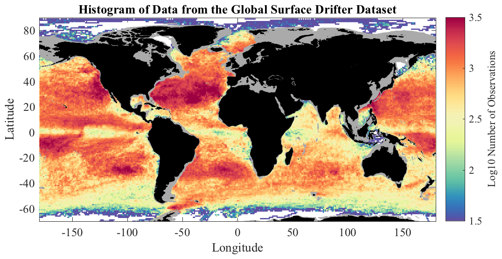

TWODHIST Two-dimensional histogram. __________________________________________________________________  __________________________________________________________________ MAT=TWODHIST(X,Y,XBIN,YBIN) where X and Y are arrays of the same length, creates a two-dimensional histogram MAT with bin edges specified by XBIN and YBIN. If XBIN and YBIN are length N and M, respectively, then MAT is of size M-1 x N-1. XBIN and YBIN must be monotonically increasing. [MAT,XMID,YMID]=TWODHIST(...) optionally returns the midpoints XMID and YMID of the bins. TWODHIST, TWODSTATS, and TWODMED are three related functions for computing statistics as a function two variables using very fast algorithms that avoid any loops through efficient use of indexing. X and Y can also be cell arrays of numerical arrays, in which case all data values are concatented prior to finding the histogram. __________________________________________________________________ Automatic bin calculation TWODHIST can compute appropriate bins internally. [MAT,XMID,YMID]=TWODIST(X,Y,N) uses N bins in the X and Y directions, linearly spaced between the minimum and maximum values, and returns the bin midpoints in XMID and YMID. MAT is N-1 x N-1. [MAT,XMID,YMID]=TWODIST(X,Y,[XMIN XMAX],[YMIN YMAX],N) similarly uses N bins, linearly spaced between the designated X and Y values. __________________________________________________________________ Algorithms By default, TWODHIST now works with an internal call to Matlab's HISTCOUNTS2 function, available as of Matlab 2015b. This is much faster than the previous algorithm. If HISTCOUNTS2 is not available, TWODHIST uses loopless algorithm that is in turn much faster than an explicit loop. TWODHIST(...,'jLab') uses this algorithm, while TWODHIST(...,'slow') uses the explicit loop. These options are mostly used for testing purposes. __________________________________________________________________ Parallelization TWODHIST(...,'parallel') parallelizes the computation using the fast algorithm together with SPMD. This requires that Matlab's Parallel Computing Toolbox be installed. While TWODHIST is already very fast, parallelization may be useful for extremely large datasets. __________________________________________________________________ See also TWODMED, TWODSTATS. 'twodhist --f' generates the sample figure shown above. 'twodhist --t' runs some tests. Usage: [mat,xmid,ymid]=twodhist(x,y,N); [mat,xmid,ymid]=twodhist(x,y,[xmin xmax],[ymin ymax],N); mat=twodhist(x,y,xbin,ybin); [mat,xmid,ymid]=twodhist(x,y,xbin,ybin,'parallel'); __________________________________________________________________ This is part of JLAB --- type 'help jlab' for more information (C) 2004--2015 J.M. Lilly --- type 'help jlab_license' for details